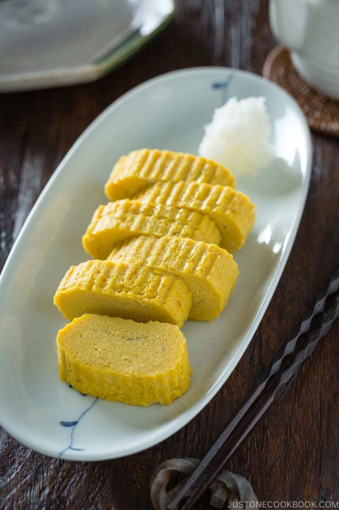

Home
Tamagoyaki

A rolled omelette makes for a bento staple
Tamagoyaki is a sweetened Japanese rolled omelette with a
custardy texture. It's well-loved amongst children and adults alike, and
you'll find it as a staple in Japanese breakfast and bento!
Ingredients:
- 3 large eggs
- 2 tbsp vegetable oil
For Seasoning:
- 3 tbsp dashi
- 2 tsp sugar
- 1 tsp soy sauce
- 1 tsp mirin
- 2 pinch salt
Cooking Instructions:
- Gently whisk eggs in a bowl. Do not over mix.
- In another bowl combine seasoning ingredients and mix well.
- Pour the seasoning mixture into the egg mixture and whisk gently.
Then pour the mixture into a measure cup with a spout.
- Heat a tamagoyaki pan over medium heat, dip a paper towel in oil
and apply to the pan. Check the heat with a little bit of egg.
- When you hear the sizzling sound, pour a thin layer of egg mixture
in the pan, tilting to cover the bottom of the pan.
- Poke the air ubbles. After the bottom of the egg has set, but still
soft on top, start rolling into a log shape from one side to the other.
- Move the rolled omelette to the side where you started to roll.
Apply more oil with a paper towel.
- Pour the egg mixture to cover the bottom of the pan again. Even under
the already rolled omelette.
- When the new layer of egg has set and still soft on top, start
rolling from one side to the other.
- Repeat method a 3rd, 4th, 5th, and 6th time, making sure to poke air bubbles.
- Remove from the pan and place on a bamboo sushi mat and wrap it up.
Shape the egg while it's still hot. Let it stand for 5 minutes.
- Remove the omelette from the sushi mat. Cut into 1/2" (1 cm) pieces.